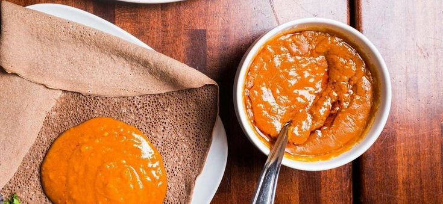

Shiro Wot
Ethiopian Chickpea Stew
Description
Shiro wat is one of the Ethiopian traditional dish. It is a soup that is thick enough that you can scoop it up with the injera.
This richly spiced and thick soup is amazingly delicious and also incredibly easy to make using whatever spices you have in your pantry!
Ingredients
- 2 medium onions
- 1/2 cup oil
- 1 Table spoon tomato paste
- 4 cloves of garlic, chopped
- 1/2 cup chickpea flour
- 2 cups of water
- 2 Table spoon cultured butter (or olive oil)
- 3/4 Table spoon salt, to taste
- 2 Table spoon paprika
- 1/2 Table spoon ground ginger
- 1/4 Table spoon ground fenugreek and coriander, each
- 1/8 Table spoon ground nutmeg and cinnamon, each
- 1 pinch of ground cloves
Steps to make Spciy Shiro
- Mix the spices in a small bowl and set them aside.
- Place the onions in a food processor and pulse until fully pureed.
- Saute the onion puree in a dry pot until it is starting to brown, about 4-5 minutes.
- Add the oil and spices. Saute for another 1-2 minutes until the spices are fragrant.
- Add tomato paste and garlic, and saute for 2-3 minutes more.
- Whisk in the chickpea flour, fully coating the flour in the oil.
- Then gradually start to add the water, whisking constantly like you were making a thickened sauce.
- Continue whisking until the mixture is smooth.
- Bring to a simmer and cook for another 5 minutes.
- Finish with the butter and salt to taste.
- Serve with fresh injera.